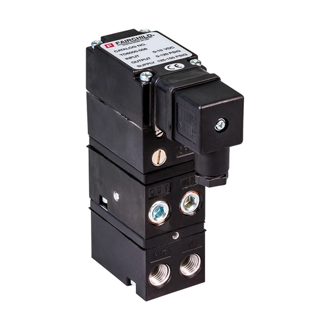

Fairchild là thương hiệu thiết bị điều khiển khí nén và điện-khí chính xác trong danh mục Instrumentation and Control của Rotork, với hơn 60 năm kinh nghiệm trong lĩnh vực pressure regulator, volume booster, pneumatic relay và transducer. Bài viết là bản đồ tổng quan giúp phân biệt vai trò từng nhóm sản phẩm Fairchild trước khi đi vào thông số kỹ thuật chi tiết của từng model/series cụ thể.

Trả lời nhanh
- Pressure Regulator: giảm áp suất khí đầu vào không ổn định xuống áp suất đầu ra ổn định — các series 10/10BP/63/65/100 và nhiều series khác theo ngành ứng dụng.
- Volume Booster: khuếch đại lưu lượng khí để tăng tốc độ đáp ứng actuator — series 20/200/200XLR/4500A/4800A/4900A.
- Pneumatic Relay: chuyển tiếp/khuếch đại tín hiệu khí — series 14/24/90/91.
- Transducer I/P và E/P: chuyển tín hiệu điện thành tín hiệu khí nén — series T5200/T5700/T6000/T7800/T8000/T9000/TXI7800 và PAX1.
- Motorized Automation Regulator PAX1: nền tảng điều áp tự động hóa, kết hợp nhiều module cho dải vacuum đến áp suất cao; có phiên bản electric actuator riêng (PAX1/PAXL) không nên nhầm với vai trò regulator.
Bản đồ vai trò sản phẩm Fairchild
| Nhóm | Vai trò | Series/model tham khảo |
|---|---|---|
| Pressure Regulator | Giảm áp suất khí đầu vào không ổn định xuống áp suất đầu ra ổn định, duy trì áp suất đó dù có hoặc không có lưu lượng | 10, 10BP, 63, 65, 100, 4100A và các series khác theo ngành ứng dụng |
| Volume Booster | Khuếch đại lưu lượng khí (không phải áp suất) để tăng tốc độ đáp ứng của actuator ở cuối đường ống khí | 20, 200, 200XLR, 4500A, 4800A, 4900A |
| Pneumatic Relay | Chuyển tiếp hoặc khuếch đại tín hiệu khí trong hệ thống điều khiển khí nén | 14, 24, 90, 91 |
| Transducer I/P và E/P | Chuyển tín hiệu điện (4-20 mA hoặc điện áp) thành tín hiệu áp suất khí nén tương ứng để điều khiển van/actuator | T5200, T5700, T6000, T7800, TXI7800, T8000, T9000, PAX1 |
| Motorized Automation Regulator | Nền tảng điều áp tự động hóa, kết hợp với module cụ thể cho dải vacuum, áp suất thấp, tiêu chuẩn hoặc cao | PAX1 kết hợp Model 10/11/16/66/81/4000A/4100A/HPD/HPP |
Cách tiếp cận khi chọn thiết bị Fairchild
- Xác định vai trò cần dùng: điều áp (regulator), khuếch đại lưu lượng (booster), chuyển tiếp tín hiệu khí (relay), hay chuyển đổi tín hiệu điện-khí (transducer).
- Xác định dải áp suất/lưu lượng yêu cầu: từ vacuum tới áp suất cao (tới hàng nghìn psi tùy series) — đối chiếu với datasheet của series cụ thể, không suy đoán từ tên gọi.
- Xác nhận tín hiệu điều khiển: analog (4-20 mA), pulse, switch closure hoặc Modbus tùy model, đặc biệt với dòng PAX1/PAXL.
- Xác nhận ngành ứng dụng và chứng nhận: nhiều series có bảng khuyến nghị riêng theo ngành (dầu khí, hóa chất, dược phẩm, thực phẩm...) và chứng nhận Ex (FM/CSA/ATEX) khác nhau.
- Không nhầm PAX1 regulator với PAX1 electric actuator: đây là hai dòng sản phẩm khác vai trò dùng chung tên nền tảng PAX1, cần xác nhận rõ nhu cầu trước khi chọn.
Model và range liên quan
| Model/range | Lý do liên quan | Trang sản phẩm |
|---|---|---|
| Flow, pressure control & filtration | Danh mục chính chứa các sản phẩm Fairchild | Flow, Pressure Control & Filtration |
| YTC Valve Positioner Accessories | Vai trò tương tự (air filter regulator, volume booster) trong hệ sinh thái Rotork instrumentation, thương hiệu khác | YTC valve positioner Rotork |
Mua thiết bị Fairchild chính hãng tại Việt Nam
Fast Group Engineering là đơn vị cung cấp sản phẩm Rotork chính hãng tại Việt Nam, đầy đủ giấy tờ CO/CQ, catalogue và datasheet theo từng lô hàng. Đội ngũ kỹ thuật hỗ trợ đối chiếu vai trò và series Fairchild theo dải áp suất/lưu lượng, tín hiệu điều khiển và ngành ứng dụng trước khi báo giá.
Câu hỏi thường gặp
Fairchild là gì trong danh mục Rotork?
Fairchild là thương hiệu chuyên về thiết bị điều khiển khí nén và điện-khí chính xác (pressure regulator, volume booster, pneumatic relay, transducer) thuộc danh mục Instrumentation and Control của Rotork, có lịch sử hơn 60 năm trong lĩnh vực pneumatic và electro-pneumatic control.
Pressure regulator và volume booster của Fairchild khác nhau ở đâu?
Pressure regulator giảm áp suất khí đầu vào không ổn định xuống áp suất đầu ra ổn định theo yêu cầu. Volume booster khuếch đại lưu lượng khí (không phải áp suất) để tăng tốc độ đáp ứng của actuator hoặc thiết bị điều khiển ở cuối đường ống khí.
Transducer I/P và E/P của Fairchild dùng để làm gì?
Transducer I/P (current-to-pneumatic) và E/P (electro-pneumatic) chuyển đổi tín hiệu điện (thường 4-20 mA) thành tín hiệu áp suất khí nén tương ứng, dùng để điều khiển van hoặc actuator khí nén từ hệ thống điều khiển điện tử.
PAX1 là positioner hay regulator?
PAX1 là nền tảng motorized automation regulator của Fairchild, có thể kết hợp với nhiều module (model 10, 11, 16, 66, 81, 4000A, 4100A...) để tạo pressure regulator tự động hóa cho nhiều dải áp suất từ vacuum đến áp suất cao. PAX1 cũng có phiên bản electric actuator (PAX1/PAXL) riêng cho ứng dụng định vị tuyến tính, không nên nhầm hai vai trò này với nhau.
Cần gửi thông tin gì để chọn đúng thiết bị Fairchild?
Gửi vai trò cần dùng (điều áp, khuếch đại lưu lượng, chuyển đổi tín hiệu điện-khí), dải áp suất/lưu lượng yêu cầu, tín hiệu điều khiển và ngành ứng dụng (dầu khí, hóa chất, dược phẩm...) cho Fast Group Engineering để đối chiếu đúng series trước khi báo giá.
Gửi yêu cầu ứng dụng để chọn đúng thiết bị Fairchild
Để kiểm tra đúng mã, vui lòng gửi vai trò cần dùng, dải áp suất/lưu lượng, tín hiệu điều khiển và ngành ứng dụng cho Fast Group Engineering qua Zalo/điện thoại (+84) 938 888 958 hoặc email minhduc@fastgroup.vn.
Nguồn tham khảo
- PUB103-005-00, Precision Control Product Overview, Issue 04/19 — trang 6-7 (bảng series theo ngành ứng dụng: transducer, regulator, relay, volume booster), trang 8 (nguyên lý hoạt động pressure regulator), trang 19-20 (Motorized Automation Regulator PAX1), trang 21 (Electric Actuator PAX1/PAXL — lưu ý khác vai trò với PAX1 regulator).
Ghi chú nội bộ: PUB103-005 phát hành Issue 04/19 (2019) — brief yêu cầu "xác nhận revision trước khi viết exact specs", nên bài này chỉ dùng để lập bản đồ vai trò/series, KHÔNG đưa thông số áp suất/lưu lượng cụ thể theo từng model vì tài liệu đã khá cũ. Reviewer cần lấy datasheet hiện hành (current) của từng series trước khi viết bài chi tiết thông số cho model cụ thể.